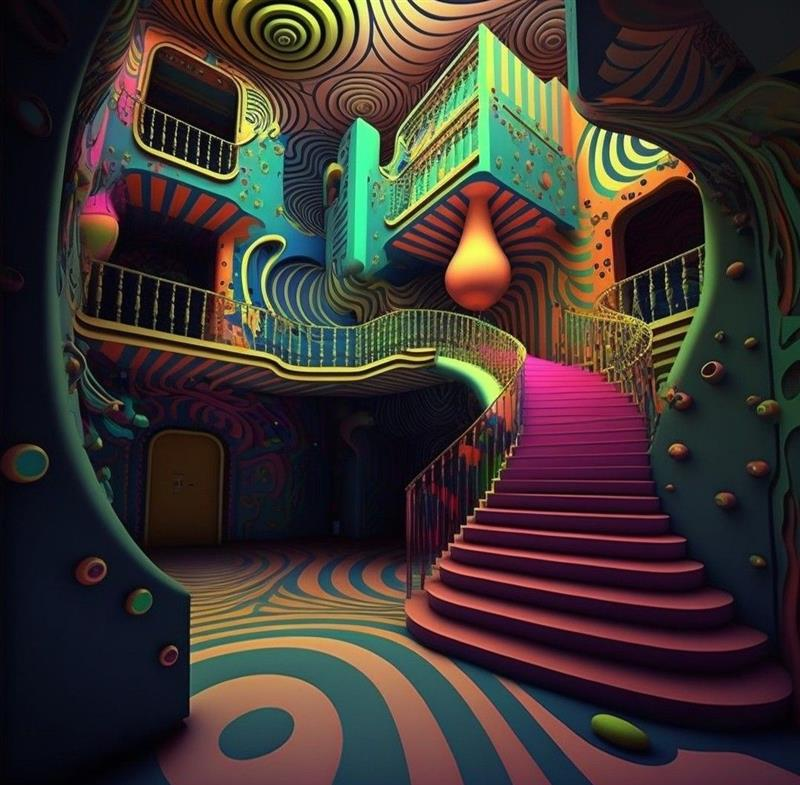
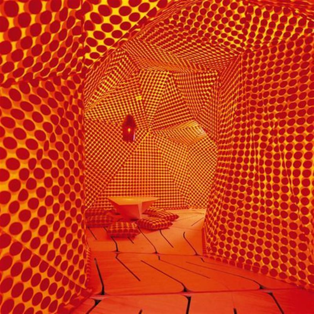
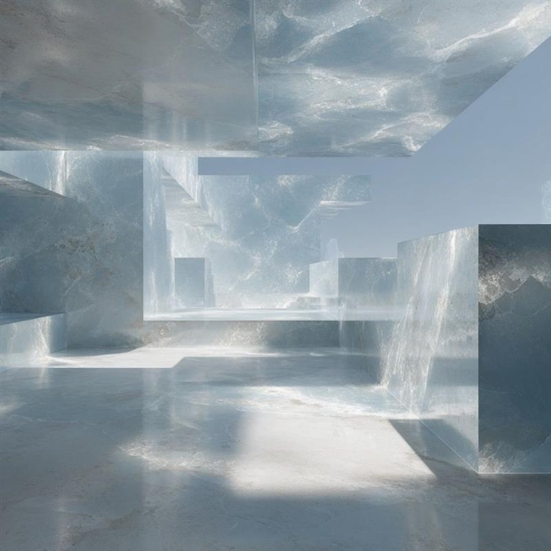
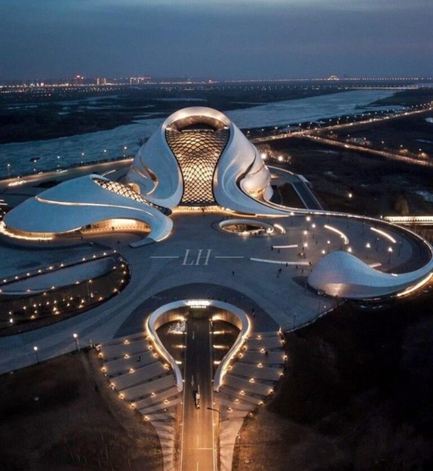
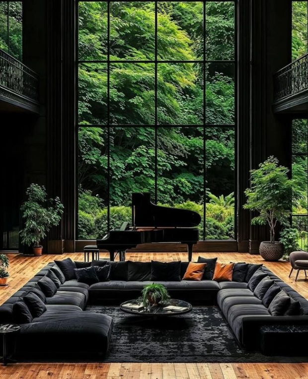
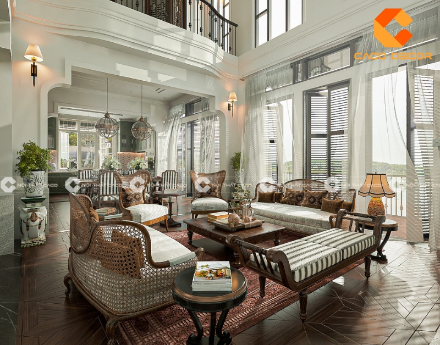

Nội dung của bài viết
Sự Khước Từ Những Giới Hạn Kiến Trúc Lối Mòn
Khi kiến trúc vượt lên trên công năng thuần túy để chạm đến chiều sâu cảm xúc, âm hưởng Psychedelia chính thức đánh dấu sự tái xuất ngoạn mục. Việc ứng dụng thủ pháp siêu thực này vào thiết kế kiến trúc đương đại đã phá vỡ mọi quy tắc hình học nền tảng, kiến tạo nên những chiều không gian huyễn hoặc và hoàn toàn độc bản.

Ngôn Ngữ Hình Khối Phi Tuyến Tính
Những đường cong hữu cơ thay thế cho hệ trục vuông vắn, mặt bằng được tổ chức theo dòng chảy của chuyển động hơn là theo ô lưới. Kết quả là một trình tự không gian mà người sử dụng cảm nhận bằng bước chân trước khi hiểu bằng bản vẽ.

3. Đột Phá Trong Nghệ Thuật Thị Giác
Bảng màu bão hòa, hoa văn phản chiếu và vật liệu có độ trong suốt biến bề mặt thành một lớp tường thuật. Ánh sáng không còn chỉ để chiếu sáng, mà trở thành chất liệu tạo hình cho toàn bộ trải nghiệm thị giác.

Khát Vọng Kiến Tạo Không Gian Đa Giác Quan
Thị giác chỉ là điểm khởi đầu. Âm học, nhiệt độ bề mặt và cả mùi hương của vật liệu được đưa vào bản thiết kế như những lớp thông tin song song, để không gian được ghi nhớ bằng nhiều giác quan cùng lúc.
Đọc tiếpỨng Dụng Tinh Tế Vào Không Gian Sống Cá Nhân
Trong một căn hộ hay một biệt thự, thủ pháp này không cần hiện diện trên toàn bộ diện tích. Một mảng trần cong, một hệ cửa nhuộm màu hay một mặt tủ phản chiếu là đủ để đưa tinh thần Psychedelia vào đời sống thường ngày mà vẫn giữ được sự tiết chế.

Parametric Design: Bước Đột Phá Của Kiến Trúc Thuật Toán Khi ranh giới giữa kỹ thuật và sáng tạo trong kiến trúc ngày càng mờ nhạt, thiết kế tham số (Parametric Design) nổi lên như một làn sóng cách mạng, thay đổi tư duy về không...
Phong cách Contemporary: Nghệ thuật của sự linh hoạt và hơi thở thời đại Phong cách Industrial: Nghệ thuật từ vẻ đẹp trần trụi và phóng khoáng Giá bán nhà mặt phố Mai Hắc Đế Hai Bà Trưng cập nhật mới nhất Phong cách Scandinavian: Nghệ thuật sống “Hygge” trong nội thất hiện đại
Phong cách Scandinavian: Nghệ thuật sống “Hygge” trong nội thất hiện đại

Phong cách Indochine là gì? Tinh hoa kiến trúc Đông Dương xưa và nay Phong cách Tân cổ điển: Đỉnh cao của sự sang trọng tiết chế
Phong cách Tân cổ điển: Đỉnh cao của sự sang trọng tiết chế